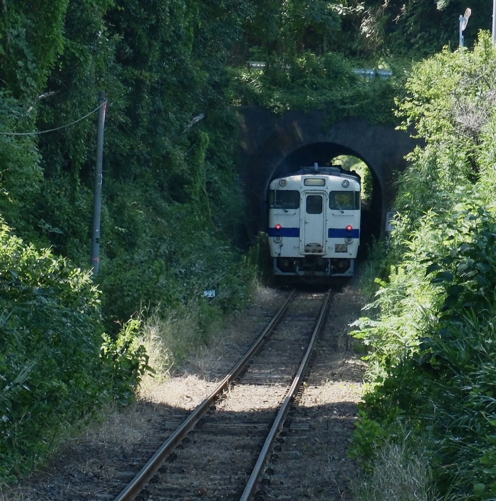
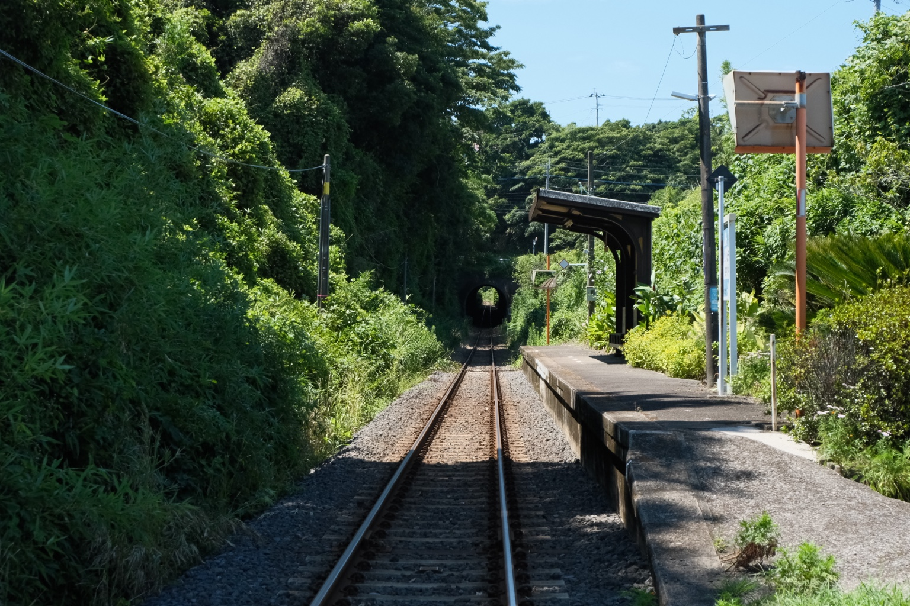

夏の緑の中を走る
深い緑に包まれた小さなトンネル。その暗がりから、白と青の気動車が姿を見せます。手前から伸びる二本のレールも、この場所の印象的な風景です。

指宿枕崎線と、薩摩半島の鉄道風景
開聞岳、海、田園、緑に包まれた小さな駅。指宿枕崎線で出会った、列車と一緒に残しておきたい風景を少しずつ紹介します。
深い緑に包まれた小さなトンネル。その暗がりから、白と青の気動車が姿を見せます。手前から伸びる二本のレールも、この場所の印象的な風景です。

小さなホームと待合所、その先に見えるトンネル。夏の濃い緑に囲まれた線路には、南薩のローカル線らしい静かな時間が流れています。
場所 指宿枕崎線・御領駅周辺
撮影位置 御領駅直近の踏切付近からトンネル方向
焦点距離 45mm（列車写真）
構図 列車を中央に置き、手前のレールを生かして奥行きを出す。
撮影日 2026年8月
※ 線路内や鉄道用地には立ち入らず、安全な場所から撮影してください。ヒマワリと列車
開聞岳と列車
南薩の鉄道風景
山川 ｜ 大山 ｜ 西大山 ｜ 薩摩川尻 ｜ 東開聞 ｜ 開聞 ｜ 入野 ｜ 頴娃 ｜ 御領 …